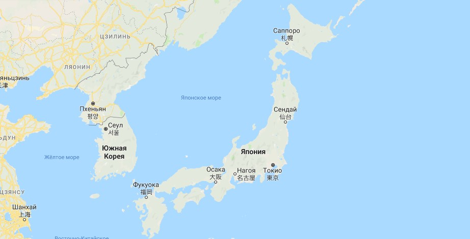
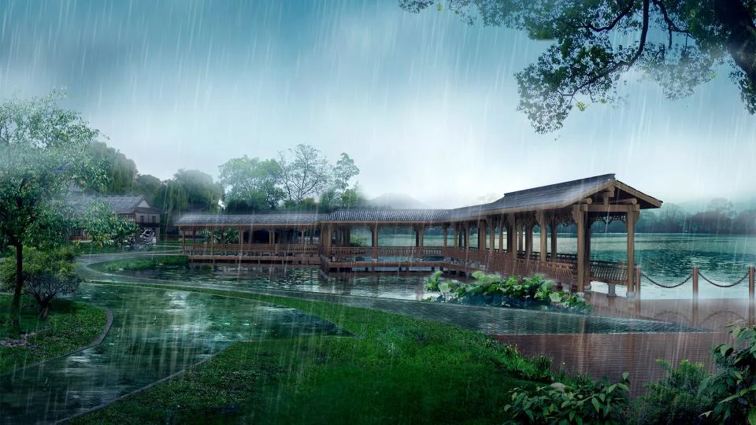

Основная информация

Япония – одно из самых развитых государств мира с тысячелетней историей, самобытной культурой и традициями. Это страна контрастов: возделывающей рис сельской глубинки и многомиллионного Токио, буддистских монахов и одержимых модой тинейджеров, торжественных религиозных ритуалов и шума игорных залов патинко, изысканной храмовой архитектуры и многоэтажных бетонных коробок. Япония расположена в Восточной Азии, на 6852 островах. Самые крупные: Хонсю, Хоккайдо, Кюсю и Сикоку, составляющие 97% всей территории. Японский архипелаг берет свое начало от Охотского моря на севере и простирается далеко на юг до Восточно-Китайского моря и острова Тайвань. Несмотря на сравнительно небольшую площадь – 377 944 км², страна густо населена. По данным 2018 года, здесь проживает 126 225 000 человек. По этому показателю маленькая Япония уступает огромной России всего на 17,2 млн человек.
узнать больше интересных фактов о Японии...
Географическое положение
 Япония – островное государство, расположенное на Японском архипелаге в Тихом океане, включающем в себя более 6500 островов. Берега архипелага сильно изрезаны и образуют много заливов и бухт. Значительное влияние на хозяйство Японии оказывают также частые землетрясения и цунами.
Страна бедна полезными ископаемыми, однако ведется добыча каменного угля, свинцовых и цинковых руд, нефти, серы, известняков. Ресурсы собственных месторождений малы, поэтому Япония - крупнейший импортер сырья.
узнать больше информации о положении, экономике и политике...
Население
Япония входит в первую десятку стран мира по численности населения. Япония стала первой страной Азии, перешедшей от второго к первому типу воспроизводства населения. Сейчас коэффициент рождаемости составляет 12%, смертности – 8%. Продолжительность жизни в стране – самая высокая в мире (76 лет для мужчин и 82 года для женщин).
Население отличается национальной однородностью, около 99% составляют японцы. Из других народностей значительна численность корейцев и китайцев. Наиболее распространенными религиями являются синтоизм и буддизм. Население размещено по площади неравномерно. Средняя плотность – 340 чел на кв. км, но прибрежные районы Тихого океана являются одними из самых густонаселенных в мире.
В городах проживает более 85% жителей страны. 11 городов являются миллионерами.
узнать больше информации о населении и культуре Японии...
Погодные условия
Хотя Япония – страна небольшая, у нее есть целых шесть климатических зон. Температурный режим колеблется от достаточно прохладного на севере (остров Хоккайдо) до субтропического в южных регионах (острова Рюкю, Бонинские острова). Климатические показатели прямо зависят от сезонных перемещений атмосферного воздуха. Так, зимой со стороны Японского моря дует северо-восточный ветер, который пригоняет облака со всеми вытекающими последствиями – сильными снегопадами.
Сезонные ветры определяют погоду и в зоне Тихого океана. Для этой местности характерны редкие снегопады, но зимы холодные. Лето же обычно влажное и жаркое благодаря влиянию сезонного юго-восточного ветра. На крайнем юго-западе, как уже было отмечено, господствует субтропический климат. Зима здесь теплая, а лето жаркое. Наблюдается высокий уровень осадков, и даже есть свой сезон дождей. Нередки тайфуны.
Погода — очень популярная, неиссякаемая тема для разговоров в течение всего года, в особенности дождь, приход которого в большинстве случаев непредсказуем. По этой причине прочный складной зон — непременный предмет экипировки всякого просвещенного путешественника по Японии. Если, не имея зонта, попадете под проливной дождь,спокойно можно укрыться в любом соседнем магазине.
узнать больше информации о климате...